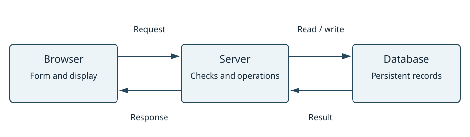

All in One View
Content from From Ideas to Computational Problems
Last updated on 2026-10-27 | Edit this page
Overview
Questions
- How do I describe what I want in a way that a computer or AI agent can implement?
Objectives
- Break a larger task into smaller, ordered steps.
- Identify inputs, outputs, variables, and state.
- Describe conditions, loops, functions, dependencies, and data flow.
- Write pseudocode for a simple application.
- Use pseudocode to guide and verify an AI-generated implementation.
Introduction
Imagine asking an AI coding agent:
Build me an application to manage my daily tasks.
The agent may produce a working-looking application, but what does manage mean? Can users add tasks, complete them, delete them, or keep them after refreshing the page? If we do not specify these details, the agent will make assumptions.
In this lesson, we will turn an idea into a computational workflow and then into pseudocode that another person or an AI coding agent can implement and test. Our running example is a simple task manager.
1. From an Idea to a Computational Problem (10 minutes)
A computational problem can be described in terms of information, operations, decisions, and expected results. Before building, ask what the application must actually do.
Challenge: What’s missing? (3 minutes)
A friend says, “I want an application to manage my daily tasks.” Write three questions you would ask before implementing it. Compare your questions with a partner.
- What information is required to add a task?
- What happens when a task is marked complete?
- Should tasks remain available after the page is refreshed?
- What happens if someone tries to add an empty task?
There is no single correct list: the purpose is to uncover hidden assumptions.
Key idea: Computers require explicit behaviour. AI agents can guess, but their guesses may not match your intentions.
2. Breaking a Problem into Smaller Steps (15 minutes)
Decomposition means dividing a large task into smaller responsibilities. A task manager might need to add, display, complete, and delete tasks. Start with one feature: adding a task.
1. User enters a task description
2. User clicks Add
3. Application checks the description
4. Application saves a valid task
5. Application displays the updated task listChallenge: Complete a task (5 minutes)
Write the steps that should happen when a user marks a task as completed. Which steps must happen in a particular order?
1. User selects a task
2. User clicks Complete
3. Application identifies the selected task
4. Application changes its completed status to true
5. Application saves the updated task
6. Application refreshes the displayed task list3. Inputs, Outputs, Variables, and State (15 minutes)
An input is information supplied to a process; an output is what the process produces.
| Part | Add Task example |
|---|---|
| Input | Task description |
| Process | Validate and save the task |
| Output | Updated task list or an error message |
A variable names a value used by the program:
task_description = "Submit assignment"
task_completed = false
task_priority = "High"State is the information that represents the application’s current situation. For example, a list of tasks and their completion statuses is part of the task manager’s state. When a task is added or completed, state changes.
Persistence is different: if tasks must survive a refresh or restart, the application must store them and reload them later.
Challenge: Identify state (3 minutes)
For a shopping-list app, identify two pieces of information the app must remember. Which information should survive closing the browser?
The app remembers each item’s name and whether it has been purchased. If users expect to return later, the list and purchased statuses should be saved persistently.
4. Conditions and Decision-Making (15 minutes)
A condition determines which action happens based on a question with a true/false result. What if the user clicks Add without entering anything?
IF task_description is empty or whitespace only
SHOW "Please enter a task"
ELSE
SAVE the taskThe workflow branches: invalid input produces an error; valid input produces a saved task.
Challenge: Priority warning (4 minutes)
Write pseudocode for this rule: If a task has high priority, display a warning; otherwise, display the task normally.
IF task_priority is "High"
DISPLAY priority warning
ELSE
DISPLAY task normally5. Repetition and Loops (10 minutes)
Suppose the app has 100 tasks. We should not write 100 separate display instructions. A loop describes an operation that repeats:
FOR EACH task IN saved_tasks
DISPLAY taskLook for phrases such as each, every, repeat, or until when analyzing a task.
Challenge: Spot repetition (3 minutes)
Which tasks involve repetition?
- Display every product in an online shop.
- Check whether one password is empty.
- Calculate the total price of all items in a basket.
- Change a page title once.
Tasks 1 and 3 naturally involve repetition over collections. Tasks 2 and 4 do not inherently require a loop.
6. Functions: Naming Smaller Jobs (10 minutes)
A function is a named, reusable operation with a clear responsibility. We can describe the task manager using jobs such as:
validateTask(description)
saveTask(task)
displayTasks()
completeTask(task_id)A function may accept information and return a result:
FUNCTION validateTask(description)
IF description is empty or whitespace only
RETURN false
ELSE
RETURN true
END FUNCTIONChallenge: Name the jobs (3 minutes)
Suggest three functions for an expense tracker that records expenses and calculates total spending.
validateAmount(), addExpense(), and
calculateTotal() are possible choices. Other sensible
designs are acceptable.
7. Dependencies and Data Flow (10 minutes)
Some steps cannot happen until earlier steps have finished. For example, we cannot validate a description before reading it, and we should not save an invalid description.
Read description
|
v
Validate description
|
v
Save valid task
|
v
Update task listThese ordering requirements are dependencies. Data flow describes where information comes from, how operations use or change it, and where results go.
Challenge: Fix the order (3 minutes)
Put these actions in a sensible order:
display updated list, validate description,
read description, save task.
Read description -> validate description -> save valid task -> display updated list. If validation fails, show an error instead of saving.
8. Writing Pseudocode (15 minutes)
Pseudocode expresses a workflow in readable, structured language without requiring the syntax of a specific programming language. It combines the concepts we have learned:
START TASK MANAGER
LOAD saved tasks
FOR EACH task IN saved tasks
DISPLAY task
WHEN user clicks Add
READ task description
IF description is empty or whitespace only
SHOW error
ELSE
CREATE task with completed = false
SAVE task
DISPLAY updated task list
WHEN user marks a task complete
FIND selected task
IF task exists
SET completed = true
SAVE updated task
DISPLAY updated task list
ELSE
SHOW "Task not found"
END TASK MANAGER| Pseudocode element | Concept |
|---|---|
READ task description |
Input |
description |
Variable |
IF description is empty |
Condition |
FOR EACH task |
Loop |
completed |
State |
SAVE updated task |
Operation/function |
| Validate before save | Dependency |
| Read -> validate -> save -> display | Data flow |
Challenge: Add deletion (5 minutes)
Write pseudocode for deleting a selected task. Consider what happens if the task cannot be found.
WHEN user clicks Delete
IDENTIFY selected task
IF task exists
REMOVE task from saved tasks
SAVE updated task list
DISPLAY updated task list
ELSE
SHOW "Task not found"9. From Pseudocode to an AI Coding Agent (10 minutes)
We will compare two prompts in the same AI coding environment.
Experiment A: Vague prompt
Build me a simple task manager.
Run the result. Record what the agent decided without asking you: supported features, validation, saving, and interface behaviour.
Experiment B: Structured prompt
Build a simple browser-based task manager using HTML, CSS, and JavaScript. Users must be able to add, complete, and delete tasks. Each task has a unique ID, description, and completed status. Reject empty or whitespace-only descriptions with an error message. Save tasks in browser localStorage and load them when the page opens. Update the displayed list after each change. First explain your plan briefly, then implement. Do not add extra features. Explain how to test the main behaviours.
Compare the implementations:
| Question | Vague prompt | Structured prompt |
|---|---|---|
| Were intended features implemented? | ||
| Were important behaviours missing? | ||
| Did the agent make unexpected assumptions? | ||
| Can you verify the result? |
Important: A detailed specification does not guarantee correct software. It makes intended behaviour easier to communicate and test.
10. Independent Challenge: Expense Tracker (10 minutes; extend as homework)
Scenario: Build an application that lets users record expenses and see how much they have spent.
Before asking an AI agent to code, complete this worksheet:
| Question | Your answer |
|---|---|
| Goal: What should the app achieve? | |
| Inputs: What does the user provide? | |
| Outputs: What should appear? | |
| Steps: What happens when an expense is added? | |
| Variables and state: What must be remembered? | |
| Conditions: What decisions are needed? | |
| Loops: What repeats? | |
| Functions: What smaller jobs are needed? | |
| Dependencies: What must happen first? |
Next, write pseudocode, ask an AI coding agent to implement it, and test these cases:
- Add a valid expense.
- Try to add an expense without an amount.
- Add multiple expenses and verify the total.
Reflection: What did the AI implement differently from what you expected? How would you change your specification?
- Start by clarifying the goal, inputs, and expected outputs.
- Decompose a large task into smaller, ordered operations.
- Use variables and state to describe the information the application works with and remembers.
- Use conditions for decisions and loops for repeated operations.
- Use functions to name meaningful, reusable jobs.
- Track dependencies and data flow to ensure the workflow makes sense.
- Use pseudocode to communicate behaviour before implementing it.
- Test AI-generated implementations against explicit examples and refine the specification when needed.
Content from Understanding What AI Is Building
Last updated on 2026-11-16 | Edit this page
Overview
Questions
- Where should I look when an AI generates a collection of code files?
- How can I follow an input through a function and predict the result?
- How can I investigate a problem and verify an AI-assisted change?
Objectives
- Locate the code responsible for one behaviour in a small application.
- Trace arguments, parameters, conditions, return values, and changes to state.
- Distinguish local imports, third-party packages, built-in capabilities, and configuration.
- Recognise an object, a method call, and a simple class definition.
- Use observed behaviour and error messages to request and verify a focused change.
From describing behaviour to inspecting code
In Topic 1, we described a task manager using pseudocode. Now imagine the AI has returned several files. How can we check whether they implement our description?
Our goal is to connect a requirement, the code responsible for it, and evidence of its behaviour. You do not need to memorise JavaScript syntax to make these connections. We use JavaScript because the earlier example already runs in a browser; the same questions apply to other languages.
Open the task-manager starter using the setup instructions. The supplied files are a repeatable example of what an AI might generate. You may inspect your own generated version later, but use the supplied version for the shared exercises. It contains one deliberate validation bug.
| Block | Explanation and demonstration | Exercises | Total |
|---|---|---|---|
| Orient yourself | 15 min | 15 min | 30 min |
| Follow one operation | 20 min | 25 min | 45 min |
| Reused code and settings | 15 min | 20 min | 35 min |
| Investigate and verify | 15 min | 25 min | 40 min |
Take a break after the second block. Break time is additional to these estimates.
1. Orient yourself: what are these files?
Source code is the human-readable instructions used to build or run software. A script is a file containing instructions executed by a language runtime, such as the browser’s JavaScript engine or Python. Some software must first be translated or built before it runs.
Our task-manager example has these responsibilities:
| File | Responsibility | A question it helps answer |
|---|---|---|
starter/index.html |
Page structure, labels, inputs, and buttons | Where is the task-description input? |
style.css |
Presentation | Why do buttons look this way? |
starter/app.js |
Validate, add, display, complete, and delete tasks | Why was this description accepted? |
storage.js |
Load and save tasks in this browser | Why are tasks present after refreshing? |
For now, use filenames to identify responsibilities. We will explore directories and paths more systematically in Topic 3.
A file can contain comments: notes for people
reading the code. In JavaScript, // begins a one-line
comment. Comments and AI explanations are useful clues; we still check
the instructions that actually run.
First look: state your expectations (5 minutes)
Before opening the code, write the expected result of:
- Adding
Read paper. - Adding an empty description.
- Adding a description containing only three spaces.
Use Topic 1’s requirement: reject empty or whitespace-only descriptions. Do not run the cases yet. Keep your predictions for the next block.
- One new task should appear.
- No task should be added; a helpful message should appear.
- No task should be added; a helpful message should appear.
These are requirements, not claims about the starter’s actual behaviour.
Start with a behaviour, then find its route
The HTML loads app.js using a script element. In
app.js, some instructions run when the module loads, while
event handlers run in response to actions. A function
definition names a job; defining the function does not itself do that
job.
JAVASCRIPT
form.addEventListener("submit", (event) => {
event.preventDefault();
addTask(input.value);
});Read this as: “When the form is submitted, prevent its default page
navigation, read the input value, and call addTask with
that value.” The arrow => introduces a function here.
You only need to recognise its role.
The route we will inspect is:
Submit the form
-> read input.value
-> addTask(description)
-> validateTask(description)
-> save and display, OR show a messageMap a behaviour to the code (10 minutes)
Open starter/app.js in an editor. Find:
- The function that decides whether a description is accepted.
- The instruction that saves the task list.
- The function that updates the displayed list.
- The event handler that connects the form to adding a task.
Compare your findings with a partner. Name a function you would inspect first if tasks saved correctly but did not appear on screen.
-
validateTask. -
saveTasks(tasks). -
displayTasks. - The
form.addEventListener("submit", ...)block.
Start with displayTasks for a display problem, while
remaining open to evidence that an earlier operation supplied the wrong
information.
2. Follow one operation
Parameters, arguments, and return values
JAVASCRIPT
function validateTask(description) {
return description.length > 0;
}
validateTask("Read paper");-
descriptionis a parameter: a name for information the function receives. -
"Read paper"is an argument: the actual value supplied by this call. -
.lengthgives the number of characters in this string, including spaces. -
>compares values. Here, the comparison producestrueorfalse. -
returnsends a value back to the caller and ends that function call.
Returning a value does not automatically display or save it. The caller decides what to do with the value. A function can also change something outside itself, such as a displayed message or saved data; this is often called a side effect.
Trace the validator (10 minutes)
Complete this table without running the code. Represent three spaces
as " ".
| Argument | Value of description.length
|
Returned value | Matches requirement? |
|---|---|---|---|
"Read paper" |
|||
"" |
|||
" " |
Where do the behaviour of the code and the requirement diverge?
| Argument | Length | Return | Matches requirement? |
|---|---|---|---|
"Read paper" |
10 | true |
Yes |
"" |
0 | false |
Yes |
" " |
3 | true |
No |
Spaces count as characters. The starter checks length, not meaningful content.
Conditions, early returns, and state
The beginning of addTask reads:
JAVASCRIPT
function addTask(description) {
if (!validateTask(description)) {
message.textContent = "Please enter a task.";
return;
}
// The remaining instructions create, save, and display the task.
}! means “not”. If validation returns false,
the condition is true and we enter the block. The bare
return; ends addTask without a useful return
value. It prevents the later saving instructions from running.
When validation succeeds, tasks.push(task) adds an item
to the in-memory list. saveTasks(tasks) writes a stored
representation. displayTasks() rebuilds the visible list
using a loop. Changing state, saving it, and displaying it are
separate operations.
Return or display? (5 minutes)
A learner says: “validateTask returns
false, so the user sees false.” Explain what
actually happens when addTask("") runs. Which function ends
at each return? Does saveTasks run?
The return false ends the call to
validateTask. The caller uses that value in its condition.
addTask changes the visible message to “Please enter a
task.” and its bare return ends addTask.
saveTasks does not run for this input.
Compare prediction with observation (10 minutes)
In the starter, click Clear practice tasks. Try the three inputs from your prediction table. Record the visible message and number of tasks after each case. Spaces may produce a task with no visible description; count the task rows or their Delete buttons. Delete this practice row afterwards.
For a normal task, also try Complete and refresh the page. Separate the evidence that the display changed from the evidence that the completion status was saved.
Use the observation worksheet if useful.
The normal description adds a task. The empty description produces a message without adding a task. Three spaces incorrectly add a task. Completing changes the display; seeing the completed status after refresh is evidence of saving and reloading in this browser. It does not establish sharing with another browser.
3. Recognise reused code and settings
Imports are clues about dependencies
At the beginning of the supplied app.js:
This imports functions from another local module. A module groups code that can be reused elsewhere. A library provides reusable capabilities; a package is a distributable unit of code and associated information. A third-party package may supply a library, but this example needs no installed JavaScript packages.
localStorage, JSON, and browser page
operations are built-in browser capabilities. They do not need a package
installation. A different project might import third-party code and list
required packages in a file such as package.json. Ask which
runtime and dependencies the project needs before following generated
installation instructions.
The word dependency has two related uses: Topic 1 described steps that depend on earlier steps; here we also mean software that other code requires.
Sort the responsibilities (10 minutes)
Match each item to application code, local imported code, built-in capability, or third-party package. Identify which item is absent from our task manager.
-
validateTaskinapp.js. -
saveTaskssupplied bystorage.js. -
JSON.stringifyandlocalStorage.setItem. - A separately installed charting library used by a different dashboard.
If an AI says “the import failed”, what information would you request before asking it to rewrite the application?
- Application code. 2. Local imported code. 3. Built-in capabilities.
- Third-party package; absent from our example.
Ask for the exact error, import statement, module location or package
name, and the way the app was launched. A local import failure is not
proof that an additional package needs installing. For example, opening
this app as a local file:// page instead of through the
supplied server can prevent module loading.
Objects, properties, methods, and classes: recognition
An object can group named values. Here
description and completed are
properties. A function accessed through an object is
called a method; for example,
tasks.push(task) calls the array’s push
method.
A class describes a way to create objects with related data and behaviour:
JAVASCRIPT
// Recognition example only: the supplied task manager does not need a class.
class Task {
constructor(description) {
this.description = description;
this.completed = false;
}
complete() {
this.completed = true;
}
}
const reading = new Task("Read paper");
reading.complete();reading is an instance of
Task. You do not need to design classes here. Both examples
represent a task, and objects can exist without a class we define.
Recognise the pieces (5 minutes)
In the class example, identify the class, instance, one property, and
one method. What is reading.completed after the last line?
Does the snippet save anything to persistent storage?
Class: Task; instance: reading; property:
description or completed; method:
complete. The final completed value is true.
There is no storage operation, so this change alone does not establish
persistence.
Configuration and environment variables
Configuration changes settings without rewriting the main behaviour. An environment variable is a named setting passed to a running process by its surrounding environment. It is different from a variable inside a function.
In Topic 4’s Python server, ACTIVITY_DB can select the
database file. Without that setting, the server uses its documented
default. A code example might read:
You only need to read this as “use the environment setting if present; otherwise use this filename.” The actual server also resolves the default location. Environment changes normally affect a process when it starts, so restart it after changing its settings.
Some settings hold credentials. Putting a secret in browser-delivered code or in a browser build setting makes it available to the browser’s user. Calling a value an environment variable does not automatically keep it private.
Which setting belongs where? (5 minutes)
For each requirement, identify whether you would inspect application logic, presentation, or configuration:
- Reject descriptions containing only spaces.
- Change button spacing.
- Store the server’s practice database in a different file.
Would a real private service key belong in a JavaScript file downloaded by users?
- Validation logic. 2. CSS presentation. 3. Server configuration, such
as
ACTIVITY_DB. A private key must not be delivered to the browser; a server can hold it and expose only the operations users are allowed to request.
4. Investigate a problem and verify a change
Different failures need different evidence
| Situation | Example | Useful evidence |
|---|---|---|
| Syntax error: code cannot be parsed | A missing closing quote | File, line, and parser message |
| Runtime error or exception: an operation fails while running | Reading .length from null
|
Error type, message, relevant call, and input |
| Behaviour differs from the requirement | Spaces become a saved task | Expected result, actual result, reproducible input |
An exception interrupts normal execution unless handled. A stack trace shows a chain of calls associated with an error. Start with the error message and the first relevant location in your own code. Exact wording varies between browsers and versions.
Invalid user input can instead be an anticipated outcome: our empty-description message is deliberate validation, not a thrown exception. Likewise, a program can finish without an exception and still produce the wrong result.
Read the evidence (8 minutes)
These are separate prepared examples, not all failures in the starter:
A. SyntaxError: Invalid or unexpected token
app.js:12
B. TypeError: Cannot read properties of null (reading 'length')
at validateTask (app.js:10)
at addTask (app.js:14)
C. Expected: no task added for " "
Observed: task count increased from 1 to 2; no console errorClassify each failure. For B, which value would you investigate first? Would removing validation entirely resolve the requirement demonstrated by C?
A: syntax error. B: runtime exception; investigate how
null reached the description parameter. C: incorrect
behaviour. Removing validation might hide symptoms but would allow more
invalid tasks; it would not satisfy the requirement. Line numbers here
illustrate how to locate evidence, not the current source layout.
Request a focused change
Prefer an evidence-based request over “fix the app”:
In the task-manager starter,
validateTaskrejects an empty string but accepts three spaces. Both should be rejected. Change the validator to reject empty or whitespace-only descriptions. Keep adding, completing, deleting, and saving tasks working. Explain the cause, show the changed lines, and give checks for a normal description, an empty string, and spaces only. Avoid extra features.
An AI explanation is a proposal to check. Review the changed lines and run the cases yourself. If the response replaces many unrelated files, ask why the change needs that scope before accepting it.
Repair and verify (12 minutes)
- Keep a copy of the starter or use the supplied solution as a comparison.
- Ask an AI assistant for the targeted change above. Without an assistant, propose the change in plain language, then reveal the solution.
- Inspect the changed lines. Do they implement the stated rule?
- Repeat the three validation cases. Also complete and delete a normal task, and refresh to check saving.
- Record one observation that could disprove the claim “the repair works”.
If editing the supplied files, reload the page to load the edited JavaScript. The starter and solution have separate practice lists.
One focused repair is:
trim() returns a string without surrounding whitespace.
It does not change the original description. A normal description is
accepted; empty and whitespace-only strings are rejected. The solution source contains
this repair. Check the browser app using the solution URL in setup.
Adding a whitespace-only task after repair would disprove the claim. Failure to complete, delete, or reload a valid task would show another behaviour changed.
Exit ticket: transfer the reasoning (5 minutes)
This independent example checks hours worked:
&& means “and”. Identify the parameter and
possible returned values. Predict the results for 0,
2.5, and 25. Name one boundary case to check.
Does this function save or display anything? Explain without asking an
AI assistant.
Parameter: hours. Return: a Boolean (true
or false). Results: false, true,
false. Useful boundary cases include 24
(accepted) and a value just above 24 (rejected). This
function neither saves nor displays data. A complete validator would
also need agreed rules about types and missing values.
- Connect a requirement to the responsible code and a behavioural check.
- A parameter names an input; an argument supplies it; a return value goes to the caller.
- Validation, state changes, persistent storage, and display are separate operations.
- Imports can refer to local code; built-in capabilities and third-party packages differ.
- Objects group properties and methods; classes are one way to create objects.
- Configuration changes settings; environment variables are supplied to a process.
- Errors and incorrect behaviour need evidence, a focused change, and independent checks.
Further reading
Content from Data, Files and Structured Information
Last updated on 2026-10-27 | Edit this page
Overview
Questions
- How does software represent, store, and exchange information?
- How can I describe a file’s structure to an AI coding agent?
- How can I check whether a conversion preserved the meaning of my data?
Objectives
- Navigate project directories and interpret file paths.
- Distinguish file extensions, formats, and contents.
- Identify common data types, records, and fields.
- Read CSV, TSV, JSON, and YAML.
- Specify and verify a data-conversion workflow for an AI coding agent.
Introduction: the same information, different representations
Imagine collecting research activities in a spreadsheet, then asking an AI coding agent to display them on a website. Before asking the agent to write code, you need to know where the data is, how it is organized, and what each value means.
We will use the same small dataset throughout this episode:
| id | activity | hours | completed |
|---|---|---|---|
| 101 | Literature review | 2.5 | true |
| 102 | Clean survey data | 1.0 | false |
| 103 | Draft report | 3.0 | false |
Why this matters for vibe coding
An AI agent may guess a file path, treat an identifier as a number, misread a comma inside a CSV value, or silently drop missing information. Knowing the structure of your data helps you specify the task and check the result.
1. Files, directories, and paths
A file stores information. A directory (folder) organizes files. A path tells software where to find a file.
research-tracker/
├── README.md
├── data/
│ ├── activities.csv
│ └── activities.json
├── output/
└── scripts/
└── convert.pyFrom the research-tracker/ directory,
data/activities.csv is a relative path. An
absolute path, such as
/home/learner/research-tracker/data/activities.csv,
specifies a location from the filesystem root. Relative paths depend on
the working directory; absolute paths often differ between
computers.
An extension such as .csv suggests a file format but
does not guarantee that its contents are valid CSV.
Challenge: Find the file (5 minutes)
Assume your working directory is research-tracker/.
- What is the relative path to
activities.json? - Where could you save a generated
activities.tsvwithout overwriting the source? - If you move into
scripts/, what relative path reachesactivities.csv?
data/activities.jsonoutput/activities.tsv-
../data/activities.csv(..means the parent directory).
2. Data types: what does a value mean?
A data type tells software what kind of value it is handling.
| Type | Example | Meaning |
|---|---|---|
| String | "00101" |
Text, including identifiers |
| Integer | 101 |
Whole number |
| Decimal number | 2.5 |
Numeric quantity |
| Boolean | true |
True or false |
| Missing/null | null |
No value present |
| Array/list | ["review", "write"] |
Ordered collection |
| Object/mapping | {"hours": 2.5} |
Named fields and values |
The text "101" and the number 101 are
different. An identifier such as "00101" should usually
remain text to preserve leading zeros. The text "false" is
not the Boolean false.
CSV and TSV represent fields as text; conversion to numbers or Booleans requires explicit rules. JSON supports several types directly. YAML supports typed values too, but parsing conventions can vary.
Challenge: Choose a type (5 minutes)
Choose a suitable type for each item and explain any ambiguity:
- Participant ID
"0007" - Number of responses
42 - Whether consent was recorded
- Date
2026-10-27 - Unknown age
- String, to preserve leading zeros.
- Integer.
- Boolean if yes/no is sufficient; otherwise account for unknown status.
- Standardized date string or a date type in systems that support it. JSON has no native date type.
- Missing/null, not zero.
3. Tables, records, and fields
A table organizes information in rows and columns. A record is an item or observation (often a row). A field is a named attribute (often a column).
The first record in our example has id = 101,
activity = Literature review, hours = 2.5, and
completed = true.
Before asking an AI agent to process a table, decide which fields are required, which identify a record uniquely, and how missing or duplicate values should be handled.
Challenge: Design a record (5 minutes)
You want to track reading materials. Propose four fields for each record. Which field uniquely identifies a record? What if the publication year is unknown?
One possible design: item_id (unique string),
title (string), author (string), and
publication_year (integer or null). Other designs are valid
if their rules are clear.
4. CSV and TSV: tabular text
CSV stands for comma-separated values; TSV stands for tab-separated values. They commonly include a header row.
CSV (data/activities.csv):
id,activity,hours,completed
101,Literature review,2.5,true
102,Clean survey data,1.0,false
103,Draft report,3.0,falseTSV uses actual tab characters between fields:
id activity hours completed
101 Literature review 2.5 true
102 Clean survey data 1.0 false
103 Draft report 3.0 falseCSV values can contain commas when properly quoted:
id,activity,hours,completed
104,"Read, annotate, and summarize",1.5,falseA naive operation that splits each line at every comma would incorrectly divide that activity into multiple fields. Use a proper CSV parser.
Challenge: Predict the error (5 minutes)
What goes wrong if an AI agent splits the last CSV row on every comma? What should you ask it to do instead?
It produces too many fields. Ask the agent to use a standards-aware CSV parser, preserve the header, and validate the number of fields in each record.
5. JSON: typed and nested information
JSON represents objects, arrays, strings, numbers,
Booleans, and null.
JSON
[
{"id": 101, "activity": "Literature review", "hours": 2.5, "completed": true},
{"id": 102, "activity": "Clean survey data", "hours": 1.0, "completed": false},
{"id": 103, "activity": "Draft report", "hours": 3.0, "completed": false}
]JSON field names and strings use double quotes. JSON can also nest arrays and objects:
JSON
{
"project": "Research tracker",
"activities": [{"id": 101, "tags": ["reading", "planning"]}]
}JSON is widely used for APIs and data exchange.
-
scores. -
reviewed. - No:
"8"is text and8is a number.
6. YAML: readable configuration
YAML is often used to describe settings, including
in a Carpentries Workbench config.yaml file.
YAML
project: Research tracker
output_directory: output
include_completed: false
fields:
- id
- activity
- hours
- completedIndentation expresses structure. A dash starts a list item. Quote values that must remain strings, especially identifiers with leading zeros and date-like text:
Read the CSV and write JSON, excluding completed records. Clarify how the CSV represents completion, what to do with missing values, and whether the source must remain unchanged.
7. Converting between formats: preserve meaning
Renaming .csv to .json is not conversion. A
conversion must parse the source, interpret fields, and
serialize the result into the target format.
START
Read data/activities.csv with a CSV parser
Check that required columns are present
FOR EACH row:
Read id, activity, hours, completed
Convert id according to the agreed identifier rule
Convert hours to a number
Convert completed to a Boolean
IF a required value is invalid:
Report its row number and stop or flag the row
ELSE:
Add the converted record to the result
Write the result to output/activities.json
Read the output again and validate its JSON syntax
Check record count and representative values
Report errors and rejected records
ENDDecide the handling of missing values, duplicate IDs, invalid numbers, and malformed rows before asking the AI to write the converter.
8. Asking an AI coding agent to convert data
Compare these instructions.
Vague request:
Convert my data to JSON.
Structured request:
Read
data/activities.csvand writeoutput/activities.json. The CSV containsid,activity,hours, andcompleted. For this dataset, convertidto an integer,activityto text,hoursto a decimal number, andcompletedfrom the CSV texttrue/falseto a Boolean. Use a proper CSV parser. Do not overwrite the source. Report the row number of any invalid value rather than guessing. Validate the JSON, check the record count, and show the first converted record. Explain your plan before writing code.
The structured request makes the paths, types, errors, and acceptance checks explicit.
Challenge: Build and verify (10 minutes)
- Create
data/activities.csvusing the three example records. - Ask an AI coding agent to convert it using the structured request.
- Inspect the resulting JSON.
- Add a fourth row with
hoursset tounknown. - Run the conversion again. Does it report the error or silently produce incorrect data?
Reflection: What additional instruction would make the implementation safer?
The first run should produce three JSON records with numeric
id and hours and Boolean
completed values. The second run should report the invalid
fourth row. Whether the conversion stops or collects errors is a policy
to specify; it must not silently replace invalid data with zero.
9. Independent challenge: design an exchange format
A researcher wants to share reading materials. Each record has a unique ID, title, publication year (possibly unknown), and several tags.
Before prompting an AI agent:
- Propose a folder structure and filenames.
- Define each field and its type.
- Choose CSV, TSV, JSON, or YAML and justify your choice.
- Write one example record.
- Describe how to verify that a conversion preserves all tags and missing years.
Challenge: Choose and justify a format
Work independently, then compare your design with a partner. Can your partner interpret your data without guessing?
Wrap-up: describe a data task before implementing it
Before asking an AI coding agent to work with files, answer: Where are the files? What formats and structures do they use? What types do fields represent? What transformation is needed? What must be preserved? What could go wrong? How will you verify the output?
- Files are organized into directories and identified using paths.
- Extensions suggest formats but do not validate contents.
- Tables contain records and fields; values have types that affect meaning.
- CSV and TSV represent tabular text; JSON supports nested typed values; YAML commonly describes configuration.
- Data conversion requires parsing, explicit type rules, error handling, and verification.
- A useful AI coding request specifies input and output paths, transformation rules, and acceptance checks.
Content from How Web Applications Work
Last updated on 2026-11-16 | Edit this page
Overview
Questions
- What happens between clicking a button and seeing a result?
- What runs in the browser, what runs on a server, and where is data stored?
- What must we specify before asking an AI to build an application for other people?
Objectives
- Assign browser, front-end, back-end, server, and database responsibilities.
- Trace an HTTP request and response using browser tools or a prepared transcript.
- Distinguish in-memory state, browser storage, and server-side persistent storage.
- Separate authentication from authorisation and identify checks that belong on a server.
- Specify a small shared application, including storage, access, and failure checks.
From a working page to a working system
In Topic 2, we followed a value through code. In Topic 3, we described records and file formats. Now we follow a record through a web application.
An application can look convincing while saving nothing, keeping data only in one browser, or allowing the wrong people to change records. “Build me an app” leaves these choices open. Knowing the parts helps us specify and investigate them.
Use the activity tracker from the setup instructions. It begins with the same three synthetic research activities used in Topic 3. It runs on your laptop with a small Python server and a SQLite database. You do not need to read the Python implementation or write database queries today.
| Block | Explanation and demonstration | Exercises | Total |
|---|---|---|---|
| Identify the parts | 15 min | 20 min | 35 min |
| Follow a request | 15 min | 25 min | 40 min |
| Locate state and storage | 20 min | 20 min | 40 min |
| Specify access and sharing | 15 min | 20 min | 35 min |
Take a break after the second block. Break time is additional to these estimates.
1. Identify the parts
The client requests something from another program. Here the client is a web browser. The front end is the part users interact with in the browser. HTML describes structure, CSS controls presentation, and JavaScript can respond to actions and request data.
A server is a program that receives requests and sends responses; we also use the word for the computer running it. The back end carries out server-side work, such as checking a submitted record and deciding whether to save it.
A database stores organised data and supports operations to retrieve and change it. Our database is a SQLite file used by the back end. The browser does not open that file directly: it asks the server to perform an operation.

The same laptop can run both browser and server. These are still separate programs with separate responsibilities. In a deployed application, the server will often run on a different computer.
Compare our two examples
| Responsibility | Task manager | Activity tracker |
|---|---|---|
| Download page, styles, and JavaScript | Local teaching server | Local teaching server |
| Respond to form submission | Browser JavaScript | Browser JavaScript |
| Validate input | Browser | Browser checks plus server validation |
| Store records | This browser’s localStorage
|
SQLite file used by the server |
| Obtain records | Read browser storage | Request records from the server |
The task manager uses a server to obtain its files, but its task operations run entirely in the browser. It does not send tasks to the activity API. A browser application does not always need a data back end or database server.
Who does this job? (10 minutes)
Assign each job to the browser/front end, back end, or database. Some operations involve more than one part: explain the hand-off.
- Display a Save button.
- Send a proposed activity and its hours.
- Reject a record with hours greater than 24, even if browser checks are bypassed.
- Keep the accepted activity after the server restarts.
- Display the saved activity in the list.
- Browser/front end. 2. Browser sends a request to the back end.
- Back end validates before writing. 4. Back end writes to persistent database storage; the database file survives this server restart. 5. Browser uses returned records to update the display. Storing a record does not itself redraw a page.
Draw the data journey (10 minutes)
Draw three boxes: browser, server, database. A researcher enters
Read methods and 1.5 hours, then clicks Save.
Add arrows and labels showing the expected journey. Where would you look
if the activity was saved but did not appear?
Compare with a partner. Can you explain each arrow without saying “the app does it”?
Browser sends proposed record -> server validates -> server writes database -> server confirms save -> browser requests the updated list -> server reads the database and responds -> browser displays records.
This supplied implementation uses a second request to reload the list after saving. Other implementations might update the display from the save response. For a saved-but-invisible record, inspect list loading and display as well as the save response; gather evidence before choosing a cause.
2. Follow a request and response
HTTP is a protocol: rules for requests and responses between clients and servers. HTTPS protects that communication in transit using encryption and server identity checks. Our loopback teaching example uses HTTP locally.
Consider this address:
http://127.0.0.1:8000/api/activities
| | | |
scheme host port path127.0.0.1 is a loopback address: this computer.
localhost is a name commonly used for a loopback address.
Keep using the same address and port during the exercises, because
browser storage is associated with the page’s origin
(scheme, host, and port). localhost and
127.0.0.1 are different hosts to the browser.
A route connects a request’s method and path to server behaviour. An API is an agreed interface through which software requests operations. Our small HTTP API has these routes:
| Method and path | Meaning in this app | Successful response |
|---|---|---|
GET /api/activities |
Retrieve activity records |
200 and a JSON array |
POST /api/activities |
Submit a new activity |
201 and the saved JSON record |
The names and meanings of these routes are choices made by this application. Not every API has these paths, and not every API is accessed over HTTP.
Read a request
POST /api/activities HTTP/1.1
Content-Type: application/json
{"activity": "Read methods", "hours": 1.5}The method describes the requested operation.
Headers describe aspects of the message;
Content-Type identifies the representation of its
body. Here the body is JSON, connecting to Topic 3. The
browser sends a number for hours, not the string "1.5".
An illustrative response is:
HTTP/1.0 201 Created
Content-Type: application/json; charset=utf-8
{"id": 104, "activity": "Read methods", "hours": 1.5, "completed": false}The new ID depends on existing records; do not expect 104 if you have already added activities. The server assigns the ID and sets new records to incomplete.
| Status | Interpretation | In the supplied app? |
|---|---|---|
200 OK |
Request succeeded | Yes, loading records |
201 Created |
New resource created | Yes, saving a valid record |
400 Bad Request |
Submitted request is invalid | Yes, failed validation |
404 Not Found |
No resource at that address | Yes, an unknown route |
500 Internal Server Error |
Server encountered an unexpected problem | General example; no deliberate 500 exercise |
An HTTP failure response still means a server responded. A connection
failure may produce no HTTP status because no response arrived. Also,
browser fetch does not treat every error status as a thrown
exception: code must check the response status. The supplied front end
checks response.ok.
Inspect the exchange (15 minutes)
- Open the activity tracker. Open browser developer tools using the browser’s menu (often More tools or Web Developer), then select Network.
- Select the Fetch/XHR filter if available. Clear existing requests,
then click Reload list. Select the request whose path
is
/api/activities. - Record its method, status, and one response record.
- Enter
Read methodsand1.5, then click Save activity. - Identify the POST and the following GET. Inspect the submitted payload and saved record. What extra fields did the server supply?
Use the worksheet. If developer tools are unavailable, use request transcripts. Menu labels vary; the method, path, status, payload, and response are the important evidence.
Reload produces GET, status 200, and an array. Save produces POST
with activity and numeric hours; status 201 returns an ID and
completed: false alongside the submitted values. The
following GET retrieves the updated array. The browser uses that array
to redraw the list. Requests for HTML, CSS, and JavaScript are different
from these requests for records.
Why validate on the server too?
A browser can help people fill out a form, but another client can send requests without using that form. The server must enforce its own data and access rules.
The supplied form checks required fields and numeric limits. Spaces satisfy the browser’s “required text” check, so the server also checks that the trimmed description is non-empty. This is the same validation idea we studied in Topic 2.
Observe a rejected request (10 minutes)
Enter three spaces for Activity and 1 for Hours, then
save. Record the POST status, response message, visible message, and
whether the list gains a record. Click Reload list to check the stored
records.
Explain why a disabled Save button or hidden form would not be enough to enforce a rule on the server. If you cannot run the example, use transcript B.
The POST returns 400 and
{"error": "Enter an activity description."}. The front end
displays a request-failed message. No new record is saved; reloading
confirms it is absent. Other clients can submit directly, so browser
controls cannot replace server validation or access checks.
3. Locate state and persistent storage
Recall Topic 1’s distinction between current state and persistence. Information can exist in several places at once:
| Place | Example | What happens on refresh? | Visible to a separate browser? |
|---|---|---|---|
| Browser memory | JavaScript’s current array | Recreated as the page loads | No, by itself |
| Browser storage | Task manager’s localStorage
|
Normally available to reload at the same origin | No, not automatically |
| Server memory | An unsaved list held by a server process | Depends on server, not page refresh | Potentially, while server runs |
| Server database file | Activity tracker’s SQLite records | Available through another request | Yes, if that browser can reach this server and access is permitted |
Browser storage can outlive closing a normal browser window, but people can clear it, browsers can restrict it, and private browsing has different lifetime rules. It is not a backup or a shared team database.
Our SQLite file persists after stopping and restarting the server when we use the same database file. Switching files produces a different set of records. A persistent file also needs suitable storage and backups in a real deployment; some hosting environments discard local files when an instance is replaced.
The database is a source of stored records. The browser’s displayed list is a view of records it last retrieved. They can temporarily disagree.
Predict, then test persistence (12 minutes)
Add a distinctive task in the task-manager starter and a distinctive
activity in the tracker. Keep the same 127.0.0.1 URL and
port throughout.
Predict before each test, then record what you see:
- Refresh both pages.
- Open the same two URLs in a separate browser or a separate browser profile on this laptop. A second tab in the same profile is not a separate browser.
- Stop the server with Ctrl+C and restart using the same command and database. Return to the original browser and refresh both pages.
Do not close private windows if they hold practice data you still need. If only one browser is available, use the expected-observations table in the solution.
| Test | Task manager | Activity tracker |
|---|---|---|
| Refresh | Task reloaded from this browser’s storage | Activity retrieved from database |
| Separate browser/profile | Original browser’s task absent | Saved activity retrieved from same server |
| Server restart, original browser | Task remains in browser storage | Activity remains in same database file |
The server is needed to reload the task-manager code, but does not
store its tasks. These observations establish access from another
browser on this laptop; they do not establish access from a colleague’s
computer. On their computer, 127.0.0.1 refers to their own
machine.
Diagnose by following evidence
Before asking an AI to change code, identify the last step supported by evidence.
| Observation | Next useful evidence |
|---|---|
| No request follows clicking Save | Browser event handling, form validation, console messages |
| Request receives 400 | Submitted values and server validation response |
| Save receives 201 but new row is absent | Follow-up GET response and display update |
| Reload receives no response | Server process, address, port, connection evidence |
| Data disappears after server restart | Database path and whether the same file is in use |
A 201 response is a claim by the server. In this supplied server it follows a database commit; in another generated system, inspect or test the implementation before assuming the same guarantee.
Separate save, load, and display failures (8 minutes)
These are prepared scenarios; do not introduce them into your working files.
A: A save returns 201. A later GET includes the new record, but the page does not show it.
B: A save returns 400 with a validation message. A later GET excludes it.
C: The list worked earlier. After the instructor stops the server, clicking Reload list fails without an HTTP response.
For each, identify the most useful next investigation and write one sentence you could give an AI assistant. If time allows, observe C live and restart the server afterwards. Do not assume these scenarios all have the same cause.
A: inspect front-end rendering and its input; the retrieval response contains the record. “The POST succeeds and the GET includes record 104, but rendering omits it; inspect the list-update code using these responses.”
B: inspect the submitted payload against the agreed validation rules. “The POST returns 400; explain which supplied value violates the rule before changing it.”
C: check and restart the server, then retry. “No response arrives at this address; verify that the server is running on the expected port before changing the app.”
4. Specify access and sharing
Authentication and authorisation answer different questions
Authentication establishes who a user is. Authorisation determines what that user may do. Being signed in does not imply permission to edit every record. Showing or hiding a button improves the interface, but the server must check permission before carrying out protected operations.
Our local activity tracker deliberately has no accounts or access controls. Any client that can reach it can read and add records. It demonstrates data flow, not a ready-made private team service. The following access examples are design scenarios, not features implemented by the supplied server.
Decide access before implementation (5 minutes)
A future shared tracker has these rules: viewers can read records; contributors can read and add records; only an administrator can delete records.
- A signed-in viewer requests a deletion. Is authentication or authorisation the missing permission?
- A contributor hides a Delete button in their browser. Has the server’s deletion rule been enforced?
- Where should the final permission check happen?
- The viewer is authenticated but is not authorised to delete.
- No; browser appearance is not a server access rule.
- On the server, before deleting. This design also needs a way to establish identity and associate it with a role; simply accepting a role supplied by a browser would not establish permission.
Localhost, domains, hosting, and deployment
A domain name, such as
tracker.example.org, is a human-readable name that can be
resolved to a network address. Hosting provides the
computing and network resources that run and serve an application.
Deployment places a chosen version, dependencies, and
configuration into that environment.
A domain name does not itself provide a running application, persistence, or access control. Uploading code to a repository does not automatically provide a running back end either. A static hosting service can serve a browser-only app; a server-backed app additionally needs somewhere to run its back end and keep its data. The supplied Python teaching server listens only on this laptop and is not a production deployment recipe.
Ask these questions when changing “an app for me” into “an app for our team”:
- Who needs access, from which computers, and what may each person do?
- Which records must be shared and persist, and where will they be stored?
- Which checks and credentials must remain on the server?
- What should happen when saving or loading fails?
- Who will host, update, and back up the application?
Turn requirements into checks
Compare:
Build a dashboard for our activities.
with:
Propose a small shared research-activity tracker before implementing it. Contributors can add activities with a meaningful description and numeric hours greater than 0 and at most 24. Viewers can read but cannot add records. Enforce data and access rules on the server. Save accepted records in persistent storage; they must remain after restarting the back end. Show a clear failure message if saving fails, and preserve the entered values for retry. Explain the browser, server, storage, identity, and hosting choices. Give checks from two browser profiles, including rejected input and denied access. Identify assumptions before writing code.
The role and hosting requirements extend our demonstration. An AI should explain those missing parts rather than claim the local demo already satisfies them.
Final challenge: specify and assess an app (15 minutes)
Work alone first, then exchange plans with a partner. For a shared reading-list or research-activity tracker:
- Draw browser, server, and storage, labelling the data exchanged.
- Define inputs and validation rules. Use Topic 3’s fields and types if helpful.
- Describe who can read and who can change records.
- Say what must survive a refresh, a server restart, and access from another authorised browser.
- Specify the visible result of success and of a failed save.
- Write three acceptance checks, including one failure case.
Then write a request to an AI assistant that includes those decisions. You do not need to generate or deploy the whole application to complete this challenge. During the separate practice period, an instructor may demonstrate one small change after reviewing its scope with the group.
One possible plan uses a browser form, a server API with server-side validation and permission checks, and a persistent database. A real identity mechanism establishes whether a user is a viewer or contributor. The browser receives records it may display; private credentials remain on the server.
Example checks:
- A contributor saves a valid record. Its returned ID can be found after a server restart and from another authorised browser.
- A spaces-only description is rejected by the server without changing the database; the user sees a useful message.
- A viewer’s direct add request is denied by the server, even if the browser interface is modified. No record is added.
An additional failure check stops the server before a save. The page should report failure, preserve input for retry, and avoid claiming the record was saved. The supplied demonstration already preserves the form on a failed POST, but does not implement the roles in this proposed plan.
- Browser, server, and database have distinct responsibilities, even on one laptop.
- HTTP requests have methods, addresses, headers, and sometimes a body; responses include statuses and data.
- Saving, retrieving, and displaying records are separate steps that need separate evidence.
- Browser storage is local to a browser and origin; shared data requires an appropriate shared service.
- Authentication establishes identity; authorisation controls allowed actions on the server.
- A shared-app specification includes validation, persistence, access, failure behaviour, and hosting assumptions.